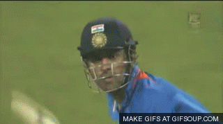

The Greatest Captain Ever
The Unseen Hero
Mahendra Singh Dhoni is the most decorated captain in the history of Indian cricket. Rising from a small city of Ranchi to reaching the top of world cricket, his incredible journey is an inspiration for billions of people. It gives them the belief that nothing is impossible. All it needs is hard work and dedication. No one will forget him running the Bangladesh player out without even looking at the stumps. He holds the record for the most number of successful stumping. He's lighting fast behind the wickets and between the stumps.
Dhoni was born in Ranchi, Bihar (now in Jharkhand) and hails from a Hindu Rajput family with roots in Uttarakhand. He is the youngest of three children of Pan Singh and Devaki Devi. His paternal village Lwali, is in Jainti Tehsil, Lamgara block of the Almora District of Uttarakhand. Unlike Dhoni, his uncle and cousins spell their surname as Dhauni. Previously Dhoni was the goalkeeper for his DAV Jawahar Vidya Mandir school's football team, but after seeing his goalkeeping skills, coach Keshav Ranjan Banerjee, one who inspired Dhoni to be a cricketer, picked him to play cricket for his school team. His exceptional wicketkeeping skills allowed him to become the regular wicketkeeper at the Commando Cricket Club (1995-1998). Based on his performance at club cricket, he was picked for the 1997/98 season Vinoo Mankad Trophy Under-16 Championship, where he performed well. India unexpectedly crashed out of the World Cup after losses to Bangladesh and Sri Lanka in the group stage. Dhoni was out for a duck in both these matches and scored just 29 runs in the tournament. After the loss to Bangladesh in 2007 Cricket World Cup. Winning the 2013 ICC Champions Trophy, Dhoni became the first and the only captain in international cricket to claim all ICC trophies. MS Dhoni was chosen to lead India in first-ever World T20 in 2007.Dhoni stepped down as captain of India in the limited over formats in January 2017. he scored 134 off 122 balls, that included a 256-run partnership with yuvraj singh. Dhoni announced his retirement from international cricket on 15 August 2020.
Dhoni made his maiden half-century in the second Test and his quick scoring rate (50 off 51 balls) helped India set a target of 436, where the Sri Lankans were then bowled out for 247. India toured Pakistan in January–February 2006 and Dhoni scored his maiden century in the second Test at Faisalabad. India was struggling, where Dhoni along with Irfan Pathan tried to recover, with the team still needing 107 runs to avoid a follow-on. Dhoni played in his naturally aggressive style as he brought up his maiden Test century in 93 balls, after scoring the first fifty in 34 deliveries. Dhoni failed to collect the Harbhajan Singh delivery cleanly as Flintoff went on to make 36 more runs as England set a target of 313 for the home team, a target that India was never in danger of threatening. A batting collapse saw the team being dismissed for 100 and Dhoni scored just 5 runs and faced criticism for his wicket-keeping lapses as well as his shot selection. A batting collapse saw the team being dismissed for 100 and Dhoni scored just 5 runs and faced criticism for his wicket-keeping lapses as well as his shot selection. He played his last series in the 2014–15 season in India's tour of Australia captaining India in the second and third tests; losing the second and drawing the third, trailing the series 2–0 before the Sydney Test. Following the third Test in Melbourne, Dhoni announced his retirement from the format.
sensetional Finish Off in Style.
MS Dhoni added another feather to his cap in 2021 edition of the league as CSK won their fourth title. Ahead of the 2022 edition of the league, MS Dhoni was one of the four retained players by the franchise and he was retained for a sum of INR 12 crore. A batting powerhouse, MS Dhoni possesses the ability to destroy different bowling attacks on his own. The calmness and composure in his demeanor along with a sharp cricketing brain accounts for a lethal combination on the cricketing field and the glistening silverware in the trophy cabinets at CSK are a testimony to his extraordinary leadership skills. He was the face of Chennai Super Kings for the first eight editions of the league, leading them to two titles (2010 & 2011) and four runner-up finishes. He then became the first player to be drafted by Rising Pune Supergiant in the ninth edition of the league. And, he once again became the first player to be retained by CSK ahead of the IPL Player Auction 2018. The 2018 season of the league had a fairytale ending with another glistening silverware added to the trophy cabinet of the Chennai Super Kings. The 2019 edition of the league too saw the CSK reach the finals of the tournament under MS Dhoni’s leadership. While MS Dhoni has hung up his boots on a 16-year illustrious career for Team India, he was seen donning the CSK colours once again in 2020
The Greatest Captain Ever